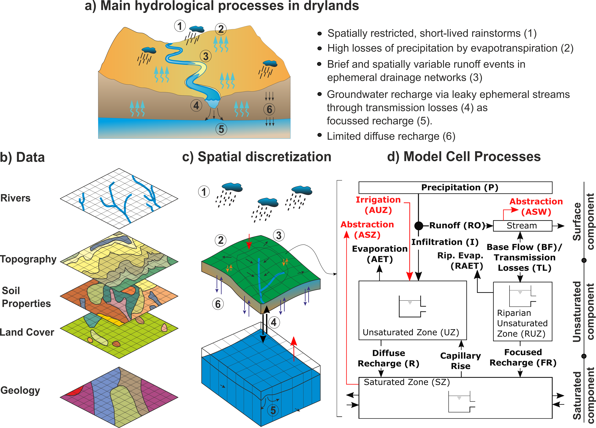

DRYP: Dryland Water Partitioning model
Model description and structure
The parsimounius water partitioning model is a process-based distributed hydrological model.

Model Hydrological Parameters
The model uses as input parameter files spatially distributed maps in raster format. If parameter file is not provided, the model will use spatially uniform default values.
A list of parameters required for each component is presented below:
For the surface component:
Digital elevation model (DEM), required (essential).
River network length (in meters) (values greater than zero are specified as rivers), if not available all cells are considered rivers. Default values is the size of model grids.
Flow direction in landlab format (ID of receiving node following landlab indexing), if no available, Landlab will automatically find the direction of flow based on the digital elevation model (DEM).
Model domain, a raster file that can indicating the basin. Default value is 1.0. If not provided, the entire grid will be assumed as the model domain.
Channel witdth (in meters), default value is 10m.
In case of proving a flow direction file, it should follow Landlab conventions. A comprehensive description of landlab flow direction convention can be found in url{https://landlab.readthedocs.io/en/master/reference/components/flow_director.html}. Noted that Landlab grids are labelled from 0 to n, where n is the number of cells (see url{https://landlab.readthedocs.io/en/master/user_guide/grid.html} and example below).
ncols 5
nrows 4
xllcorner 574361
yllcorner 3502989
cellsize 1000
NODATA_value -9999
15 16 17 18 19
10 11 12 13 14
5 6 7 8 9
0 1 2 3 4
Flow direction raster files must have as values the number of the next downstream cell. If a cell value of the flow direction file has the same value of index, it means that it is a sink point.
For the subsurface component the following parameters can be provided, if not availble default values will be used:
Rooting depth in mm, default value 1000mm
Wilting Point (wp), default value 0.1
total available water wilting point (AWC), default value 0.10
Porosity (n_e), default value 0.40
Standard deviation of the saturated hydraulic conductivity, $sigma$
Infiltration at saturated conditions, ($K_{sat}$) in mm/h, default value 1.0 mm/h
Water content at residual capacity, $theta_r$
Exponent of the water retention function (soil particle distribution), $b$ default value 10.5.
Suction head, $psi$, default value 300mm
For the groundwater component
Aquifer saturated hydraulic conductivity, $Ks_{GW}$, default value 1 [m/h]
Aquifer specific yield, $Ks_{GW}$, default value 0.01 [-]
Groundwater model domain, optional, in case that groundwater catchment is different than surface catchment.
Initial water table, default value is specified at 1 meter below the rooting depth.
Head boundary conditions (optional)
Flux boundary conditions (optional)
Streambed elevation, default value is 5m below the surface elevation.
Forcing datasets
DRYP requires time series as model forcing datasets. Precipitation and potential evpotranspiration must be provided in order to run the model, otherwise it will throw an error. Dataset can be spatially variable data as netCDF files, or uniform values over the whole model domain by providing a csv file.
Model outputs
Output variables for each model component are summarised below, the name of the variable is in brackets. Units of time depends on model settings, for example months.
Surface component:
Runoff (run), in mm/month
Infiltration rate (inf, in mm/month)
Transmission losses (tls), m3/month
Streamflow (dis), m3/month
surface water storage, it includes rivers (ssz), m3/month
Subsurface and riparian component:
Soil and riparian Water content (tht), m3/m3
Actual evapotranspiration from hillslope and riparian area (aet), mm/month
Groundwater diffuse (drh) and focused (fch) recharge, mm/month
Groundwater component:
Water table elevation (wte), m.
groundwater discharge (gdh), m3/month
capillary evapotranspiration (egw), mm/month
total water storage deviation (twsc), m/month
Model parameters and setting files
Model input files are plain text format, which can be created by using any text editor (e.g. notepad). These files must follow a strict
Input parameter file
All filename’s parameters must be listed in model parameters file, which is further explained below, However, if a parameter filename is not provided, the default values will be used as model parameters.
The input file must be a plain text file. This file must have as head ‘drylandmodel’ in the first line (see example below), omitting the first line will raise an error when running the model.
Filenames provided in the input file must be written only on specified lines, the example below could be use as template. Any change in the order of parameters files will result in inconsistent results or model errors that may cause to stop the simulation (e.g. if the file ‘HAD_dem.asc’ is written in line 5, python will raise an exception error).
The model is under development therefore some components are still not available (e.g. abstractions and irrigation are not yet available.
Meteorological data required as forcing dataset must be provided in lines 66 and 68. Information can be provided in netCDF format in order to take into account the spatial variability, or it can be a “.csv” file which in turn will assume a uniform rate over the entire model domain (not common). Filenames of the forcing datasets should follow the format specified in the paramter setting file (see next section), and it will depend on the numbers of files provided. If there is only one file, the name of the file can be written directly on the files, but if there are multiple files it will depend on the frequency. Yearly files must have the month and the year specified as numbers (e.g. IMERG_2000-02.nc), whereas yearly files must have only the year specified in numbers (e.g. IMERG-2000.nc). In the input parameter file, the filename field must contain YYYY and/or MM for monthly or yearly datas, as it is shon in the the following examples:
forcing/YYYY/MM/IMERG-YYYY-MM.nc for monthly files,
forcing/IMERG-YYYY_final.nc for yearly files
For the groundwater component, boundary conditions can be specified as head and flux boundary conditions on lines 61 and 63, respectively. A raster file of head/flux must be provided if boundary conditions are considered in the model. The raster file will consider a boundary condition any value different that -9999. If boundary files are not provided, zero flux boundary conditions will be assumed.
To print results at specified locations a file listing the x and y coordinates of the each point must be provided as input file. This file must have at least one point listed and it must be located inside the model domain, otherwise an exception error will be raised. More details about the format and specifications about output files is provided in section ref{Coutput}
Result at different locations of each model component can be obtained by providing a file containing a list of coordinates. This should be specified in a comma separated format (e.g. .csv) with column heads specified as North and East for the y and x, respectively. If a coordinate is not located inside the model domain, the simulation will stop. Note that at least one point coordinate should be specified, otherwise, an error will be produced.
Coordinate files must be specified in the following lines of the main input file:
line 77: File of coordinates for surface component.
line 79: File of coordinates for unsaturated zone.
line 81: File of coordinates for saturated zone.
Point result file are named with the model name followed by aletter p and the name of the variable at the end.
Model variable name’s and codes stored for point result files, for filename see table
Surface component
dis, Discharge
tls, Transmission losses
inf, infiltration excess
Unsaturated zone
tht, soil moisture
aet, actual evapotranspiration
rch, recharge, diffuse and foccused recharge
Saturated zone
wte, water table elevation
Point result files are time series with the first column specified as time with head ‘Date’. The number of columns of result files depend on the number of points specified in the coordinate files defined above. Columns are label depending on the component and variable (see ref{tab:point_files}) followed by number starting by zero (e.g. for discharge, the file model_name_p_dis.csv will contain the following columns, Date’ for time and ‘dis_0’, ‘dis_1’, .. etc. for discharge values)
DRYP automatically save spatially averaged fluxes and water content of model compartments. The name of the this result file has the suffix texttt{avg} and the end. Results are saved at time steps specified for the surface component.
Average results are saved in a comma separated file that can be opened in microsoft excel or any text editor. The document contains the following information which is specified by codes for each variable in the first line:
pre, precipitation,
pet, potentiial evapotranspiration
rch, recharge,
dis, discharge,
aet, actual evapotranspiration,
tht, soil water content,
twsc, groundwater storage,
egw, capillary evaporation
bc, flux at boundary condition
tls, transmission losses
Discharge stored in the ‘avg’ file corresponds to the first row of the coordinate file. Therefore, in order to close the mass balance of the catchment, the first row of the coordinate file must be the coordinate of the catchment output.
Finally, an example of input parameter file is shown bellow, user can copy this template to create a nuew model.
1drylandmodel
2Model name --------------------------------------(1):
3Juba_IM_sim
4================ TERRAIN COMPONENTS =================
5Topography (DEM)---------------------------------(4):
6/user/work/km19051/Juba/input/JU_HAD_DEM_utm_mm.asc
7Cell factor area --------------------------------(6):
8/user/work/km19051/Juba/input/Juba_IM_sim_ini_avg_Q_ini.asc
9Flow Direction (fd)------------------------------(8):
10/user/work/km19051/Juba/input/JU_HAD_flowdir_land_utm.asc
11channel decay parameter ------------------------(10):
12/user/work/km19051/Juba/input/JU_HAD_decay_utm_v0.asc
13Basin Mask (catchment) -------------------------(12):
14/user/work/km19051/Juba/input/HAD_basin_Juba_mask.asc
15River length -----------------------------------(14):
16/user/work/km19051/Juba/input/JU_HAD_riv_length_utm.asc
17River width ------------------------------------(16):
18/user/work/km19051/Juba/input/JU_HAD_width_utm_v0.asc
19River bottom elevation -------------------------(18):
20/user/work/km19051/Juba/input/JU_HAD_riv_elev_utm_mod.asc
21================ SURFACE COMPONENTS =================
22Vegetation type Kc -----------------------------(21):
23none
24Soil land use ----------------------------------(23):
25none
26Other ------------------------------------------(25):
27none
28=========== SOIL AND SUBSURFACE PARAMETERS ==========
29Soil porosity: porosity ------------------------(28):
30/user/work/km19051/Juba/input/JU_HAD_theta_sat_utm_m.asc
31Theta residual ---------------------------------(30):
32none
33Available Water content (AWC) ------------------(32):
34/user/work/km19051/Juba/input/JU_HAD_theta_awc_utm.asc
35Wilting Point (wp) -----------------------------(34):
36/user/work/km19051/Juba/input/JU_HAD_theta_wp_utm.asc
37Soil Depth (D) ---------------------------------(36):
38/user/work/km19051/Juba/input/JU_HAD_rootdepth_utm_m.asc
39Soi particle distribution parameter (b) --------(38):
40/user/work/km19051/Juba/input/JU_HAD_lambdas_utm_m.asc
41Soil suction head ------------------------------(40):
42/user/work/km19051/Juba/input/JU_HAD_psi_utm_m.asc
43Saturated hydraulic conductivity ---------------(42):
44/user/work/km19051/Juba/input/JU_HAD_ksat_utm_m.asc
45sigma_Ksat -------------------------------------(44):
46none
47Initial soil water content ---------------------(46):
48/user/work/km19051/Juba/input/Juba_IM_sim_ini_avg_tht_ini.asc
49Other ------------------------------------------(48):
50/user/work/km19051/Juba/input/JU_HAD_ksat_utm_m.asc
51=== GROUNDWATER PARAMETER AND BOUNDARY CONDITIONS ===
52Groundwater Boundary condition (domain) --------(51):
53none
54Aquifer Sat. Hydraulic Conductivity (Ksat_aq) --(53):
55/user/work/km19051/Juba/input/JU_HAD_ksat_D2E_ksat_utm_sim_28.asc
56Specific Yield----------------------------------(55):
57/user/work/km19051/Juba/input/JU_HAD_ksat_D2E_sy_ghlymps_utm.asc
58Initial Conditions Water table elevation -------(57):
59/user/work/km19051/Juba/input/Juba_IM_sim_ini_avg_wte_ini.asc
60Flux Boundary Conditions -----------------------(59):
61none
62Head Boundary Conditions -----------------------(61):
63/user/work/km19051/Juba/input/HAD_basin_Juba_CHB.asc
64Aquifer bottom elevation -----------------------(63):
65/user/work/km19051/Juba/input/JU_HAD_botb.asc
66============== METEOROLOGICAL DATA ==================
67Precipitation ----------------------------------(66):
68/user/work/km19051/dataset/IMERG/YYYY/IMERG_YYYY-MM.nc
69Potential Evapotranspiration -------------------(68):
70/user/work/km19051/dataset/ERA/HAD_pet_H_YYYY.nc
71Other-------------------------------------------(70):
72none
73Other ------------------------------------------(72):
74none
75======== RESULTS AND OUTPUT DIRECTORIES =============
76Discharge point results ------------------------(75):
77/user/work/km19051/Juba/input/HAD_juba_dryp_station_utm.csv
78Soil point results output ----------------------(77):
79/user/work/km19051/Juba/input/HAD_juba_dryp_station_utm.csv
80Groundwater point results ----------------------(79):
81/user/work/km19051/Juba/input/HAD_juba_dryp_station_utm.csv
82Folder location results ------------------------(81):
83/user/work/km19051/Juba_output
84Other ------------------------------------------(83):
85none
86Other ------------------------------------------(85):
87none
88MODEL PARAMETER SETTINGS FILE ------------------(87):
89/user/work/km19051/Juba/HAD_IMERG_Juba_par_setting.dwapm
90GROUNDWATER AND the TWO-LAYER MODEL FILES ------(89):
91/user/work/km19051/Juba/HAD_GW_parameters.dwapm
92INTERCEPTION MODEL -----------------------------(91):
93none
94RIPARIAN PROPERTIES ----------------------------(93):
95/user/work/km19051/Juba/HAD_riparian_inputs.txt
96SURFACE BOUNDARY CONDITION PARAMETERS ----------(95):
97none
98PROJECTION DATASETS ----------------------------(97):
99/user/work/km19051/Juba/HAD_projection.dwapm
100STORE VARIABLES SETTINGS -----------------------(99)
101none
Simulation settings file
Simulation parameter file
Information about simulation parameters such as period or time step must be provided in a plain text file. This file contains parameters that control the simulations such as simulation period, format of input files as well as the activation of model components such as groundwater flow.
The simulation settings file has to include in the first line the following text DWAPM_SET, as shown in the example below, omitting the first line will stop the simulation. Lines with numerical values are allowed to change. The change of position of lines will also result in inconsitent results or even stopping the model.
Simulation period}
Information related to simulation period should be specified as the initial and final date of the simulation and must be specified in lines 4 and 6. Date must be specified as integers separated by spaces (e.g. 2001 1 9), zeros on the left side are not allowed (e.g 2001 01 19, will raise an error).
Simulation time step
Simulation time step for each component must be specified at lines 8, 10, and 12, for the surface, subsurface, and groundwater component, respectively. Time has to be specified in minutes, with a maximum time step of one day (1440 min). Time step must be an integer, and values must be rational fraction of the hour (e.g 20 min is allowed but 25 will stop the simulation) when sub-hourly time step is set. In case of hourly time steps, it must be a rational fraction of the day (e.g. 180 min (3h) is allowed but 300 min (5h) will result in errors). The time step of the groundwater components can not be less than the surface component.
Forcing data format
The format of precipitation, evapotranspiration, vegetation, boundary conditions, and water abstraction files must be specified in lines 15. The following options are available:
csv file (only one file, that will be applied to the whole model domain)
netCDF file, only when one file is provided for the entire simulation period.
netCDF files, when yearly files are provided
netCDF fiels, when monthly fiels are provided
The time frequency of the of model input files should be specified on line 17, and it should be in minutes as time units. Note that it is not the time step of the model, it is only of the forcing dataset.
The model also accept datasets that are not in the model grid projection, or do not have the same grid size. For those cases, we can specified if each dataset requires a reprojection and/or interpolation. These options can be activated by changing the value from 0 to 1 on each of the corresponding dataset values on line 19 and 21 for reprojection and interpolation, respectively. The order of the reading iptions parameters is not allowed to change, it will result in errors or even stop the simulation.
The order must allways follow: Precipitation, potential evapotranspiration, abstractions, crop factor (Kc), vegetation paramters (SAVI), overald flux boundary conditions. The following is an example of the configuration of reading parameters options.
READING OPTIONS: PRE-PET-ABS-Kc-SAVI-FLUX ==========
Read datasets: 0-csv 1-One-netCDF 2-Multi-netCDF(13)
3 2 0 0 0 0 0 0
Dataset time step (minutes).....................(15)
30 60 60 60 60 60 60 60 60 60
Reproject datasets: 0- disable 1- disable ......(17)
1 1 0 0 0 0 0 0
Interpolate datasets: 0- disable 1- disable ....(19)
1 1 0 0 0 0 0 0
Infiltration method selection
DRYP has four types of infiltration methods implemented which can be selected by a specific code on line 22. The following codes can be chosen depending on the infiltration approach adopted:
Schaake model,
Philip’s equation,
Upscaled Green and Ampt,
Modified Green and Ampt method.
Groundwater component selection
For the groundwater component, three different approaches for groundwater flow conditions are available:
Constant transmissivity,
Variable transmissivity with depth, fully unconfined conditions,
Transmissivity function,
Multi-aquifer settingd, it will enable the use of multiple aquifer types domains (a file must be provided).
The groundwater components can be activated or disabled in line 26, a value of 1 enable the groundwater component whereas a value of 0 disables it. A value of 2 will activate a two layer groundwater component (this component is still being tested).
The groundwater approach is specified along with the activation code of the groundwater component as shown in the example below (not required for the two-layer model):
Run Groundwater - Type: 0-Cons 1-Unc 2-func 3-Multi
1 1
In case that the approach is not specified, the “variable transmissivity”, option 0, is used as default approach.
Line 27 is currently disabled.
Setting storage of model outputs
To save model results as netCDF files, lines 33 and 35 of the setting parameters file need to be modified. A value of 1 in line 33 will activate the option save, whereas line 35 is used to specify the aggregation frequency. Frequency should be specified as integer and a string character. Accepted character are D for days, M for months and Y for years, an example is specified below:
Save state results in netcf files...............(33)
1
Temporal aggregation results (eg. 3M Y H)''.....(35)
1M
Line 37 is currently disabled.
Calibration factors
A set of parameters that globally modify the model parameters are also specified in the simulation settings file. Values are scale factors of the following parameters, this values are unitless:
line 48: kdt, for water partitioning of the Shaake infiltration approach,
line 50: kDroot, for rooting depth,
line 52: kAWC, for available water content,
line 54: kKsat for the saturated hydraulic conductivity of the soil,
line 56: kSigma, for the standard deviation of the saturated hydraulic conductivity of the Modified Green and Ampt approach,
line 58: kKch, for infiltration rates in the channel,
line 60: kT for decay parameter of discharge,
line 62: kKaq for aquifer saturated hydraulic conductivity,
line 64: kSy for aquifer specific yield factor,
1DWAPM_SET
2======== SIMULATION PERIOD AND TIME STEP =========
3Initial date for simulation (YYYY MM DD) ........(2)
42000 7 1
5Initial date for simulation (YYYY MM DD) ........(4)
62006 1 1
7OF Time step - dt_Pre (min) - (1440 for daily)...(6)
860
9UZ Time step - dt_Pre (min) - (1440 for daily)...(8)
1060
11GW Time step -----------------------------------(10)
1260
13READING OPTIONS: PRE-PET-ABS-Kc-SAVI-FLUX ==========
14Read datasets: 0-csv 1-One-netCDF 2-Multi-netCDF(13)
153 2 0 0 0 0 0 0
16Dataset time step (minutes).....................(15)
1730 60 60 60 60 60 60 60 60 60
18Reproject datasets: 0- disable 1- disable ......(17)
191 1 0 0 0 0 0 0
20Interpolate datasets: 0- disable 1- disable ....(19)
211 1 0 0 0 0 0 0
22============== MODEL COMPONENTS ====================
23Inf.- 0: Scheeke 1: Philips 2: Up_GA 3: Mod_GA..(22)
241
25Run Groundwater - Type: 0-Cons 1-Unc 2-func 3-Mu(24)
261 2
27not used .......................................(26)
28none
29not used .......................................(28)
30none
31=============== OUTPUT OPTIONS ====================
32not used ................................... ...(31)
330
34Save state results in netcf files...............(33)
351
36Temporal aggregation results (eg. 3M Y H)''.....(35)
371M
38not used .......................................(37)
390
40not used .......................................(39)
411
42not used .......................................(41)
430
44not used .......................................(43)
451
46============= MODEL PARAMETERS FACTORS ============
47Runoff partition parameter (kdt-Sheeke).........(46)
481.0
49Soil Depth factor - kDroot (mm) ................(48)
501.05
51Not used (available for other parameter)........(50)
521.0
53Infiltration rate factor - kKsat ...............(52)
540.25
55Heterogeneity factor - k_sigma - (Upscaled GA)..(54)
561.0
57Transmission losses factor - kKch ..............(56)
580.40
59Decay discharge factor - kT ...................(58)
6021
61Channel width parameter (pe-not activated)......(60)
621
63Aquifer saturated hydraulic conductivity........(62)
640.20
65Aquifer specific yield factor...................(64)
660.08
Riparian zone parameter files
1RIPARIAN
2Soil porosity: porosity ------------------------(1):
3/user/work/km19051/Juba/input/JU_HAD_theta_sat_utm_m.asc
4Theta residual ---------------------------------(3):
5none
6Available Water content (AWC) ------------------(5):
7/user/work/km19051/Juba/input/JU_HAD_theta_awc_utm.asc
8Wilting Point (wp) -----------------------------(7):
9/user/work/km19051/Juba/input/JU_HAD_theta_wp_utm.asc
10Soil Depth (D) ---------------------------------(9):
11/user/work/km19051/Juba/input/JU_HAD_rootdepth_utm_m.asc
12Soi particle distribution parameter (b) --------(11):
13/user/work/km19051/Juba/input/JU_HAD_lambdas_utm_m.asc
14Soil suction head ------------------------------(13):
15/user/work/km19051/Juba/input/JU_HAD_psi_utm_m.asc
16Saturated hydraulic conductivity ---------------(15):
17/user/work/km19051/Juba/input/JU_HAD_ksat_utm_m.asc
18sigma_Ksat -------------------------------------(17):
19none
20Initial soil water content ---------------------(19):
21/user/work/km19051/Juba/input/Juba_IM_sim_ini_avg_tht_rp_ini.asc
22Other ------------------------------------------(21):
23none
24
Groudwater parameter file
The groundwater parameter file should be specified when the model uses multi-aquifer and a transmisivity function. If lakes is considered in the model, a file, indicating the bathymetry should be provided. An example of groundwater paramter file is provided below:
1GROUNDWATER
2Additional parameter a for Aquifer--------------(1):
3/user/work/km19051/Juba/input/JU_HAD_BDdepth_utm_m.asc
4Additional parameter b for Aquifer--------------(3):
5/user/work/km19051/Juba/input/JU_HAD_slopefactor_zero_utm_m.asc
6SECOND LAYER PARAMETERS ============================
7Bottom elevation second layer ------------------(6):
8none
9Hydraulic conductivity second layer ------------(8):
10none
11Specific yield second layer -------------------(10):
12none
13Specific storage second layer -----------------(12):
14none
15Inital head conditions second layer------------(14):
16none
17raster aquifer type for GW set 3 --------------(16):
18/user/work/km19051/Juba/input/JU_HAD_aquifer_type_utm_m.asc
19Lake maximum water elevation ------------------(18):
20/user/work/km19051/Juba/input/JU_HAD_lakes_globhaty_utm.asc
Projection system file
When datasets are not in the same projection system thatn the model domain (UTM), a projection settings file should ne provided. It should contain the projection system of model, and the projection system of each dataset. An example is presented below:
1PROJECTION
2Model
3+proj=laea +lat_0=5 +lon_0=20 +x_0=0 +y_0=0 +datum=WGS84 +units=m +no_defs
4Datasets:
5List projection on the order of settings file:
6EPSG:4326
7EPSG:4326
8EPSG:4326
Vegetation parameters file
This component is still under development
1INTERCEPTION
2fraction of vegetation cover ------------------(1):
3../DynaVeg/input/DV_frac_cov.asc
4Soil-Adjusted Vegetation Index - SAVI----------(3):
5../DynaVeg/input/DV_SAVI_all_art_60min.nc
6Coeficient of exponential function ------------(5):
7../DynaVeg/input/DV_veg_a.asc
8Power value for exponential function ----------(7):
9../DynaVeg/input/DV_veg_b.asc
10Min Soil-Adjusted Vegetation Index ------------(9):
11../DynaVeg/input/DV_SAVI_min_art_60min.nc
12Max Soil-Adjusted Vegetation Index ------------(11):
13../DynaVeg/input/DV_SAVI_max_art_60min.nc
14Leaf area index -------------------------------(13)
15none
16Soil-Adjusted Vegetation Index - SAVI----------(15):
17../DynaVeg/input/DV_SAVI_all.nc
18Coeficient of exponential function ------------(17):
19../DynaVeg/input/DV_veg_a.asc
20Power value for exponential function ----------(19):
21../DynaVeg/input/DV_veg_b.asc
22Min Soil-Adjusted Vegetation Index ------------(21):
23../DynaVeg/input/DV_SAVI_min_art_60min.nc
24Max Soil-Adjusted Vegetation Index ------------(23):
25../DynaVeg/input/DV_SAVI_max_art_60min.nc
26Leaf area index -------------------------------(25)
27none
28Tap water depth -------------------------------(27)
29../DynaVeg/input/DV_tap_depth.asc
30Final water depth -----------------------------(29)
31../DynaVeg/input/DV_final_depth.asc
32biome-dependent factor ------------------------(31)
33../DynaVeg/input/DV_fcw.asc
34Initial canopy water storage ------------------(33)
35../DynaVeg/input/DV_Sca0.asc
Overland flow boundary condition file
This component is still under development:
1OFBC
2Flux data for time variable boundary conditions ----(1)
3../DynaVeg/input/DV_OF_flux.csv
4List points or raster map if netCDF not provided ---(3):
5../DynaVeg/input/DV_flux_points.csv
6other ----------------------------------------------(5):
7none
8other ----------------------------------------------(7):
Store variables settings file
{"store_var_grid":{
'pre': True,
'pet': True,
'run': True,
'aet': True,
'inf': True,
'tht': True,
'rch': True,
'egw': True,
'wte': True,
'gdh': True,
'twsc': True,
'chb': True,
'tls': True,
},
"store_var_point":{
'aet': True,
'inf': True,
'dis': True,
'tht': True,
'rch': True,
'wte': True,
'gdh': True,
'ssz': True,
},
"store_var_avg": {
'pre': True,
'pet': True,
'run': True,
'aet': True,
'inf': True,
'tht': True,
'rch': True,
'egw': True,
'wte': True,
'gdh': True,
'twsc': True,
'chb': True,
'tls': True,
},
"store_ver_grid_rp": {
'aet': True,
'fch': True,
'tls': True,
'tht': True,
'ssz': True,
}
}